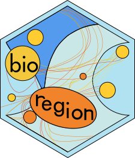
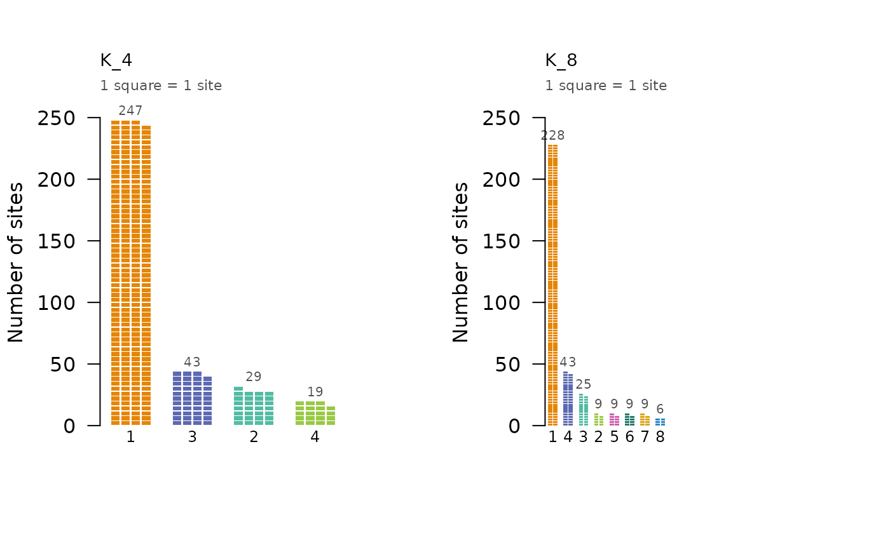
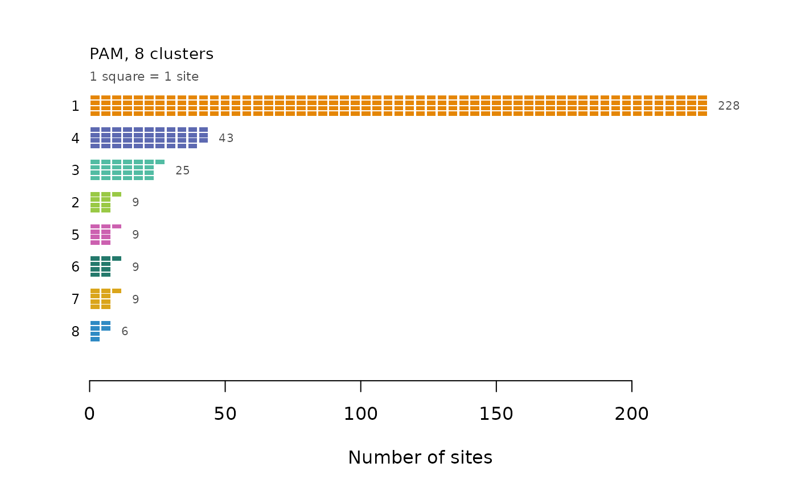
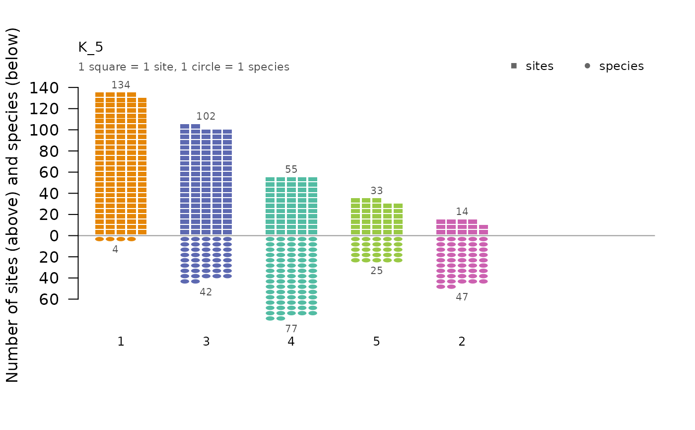
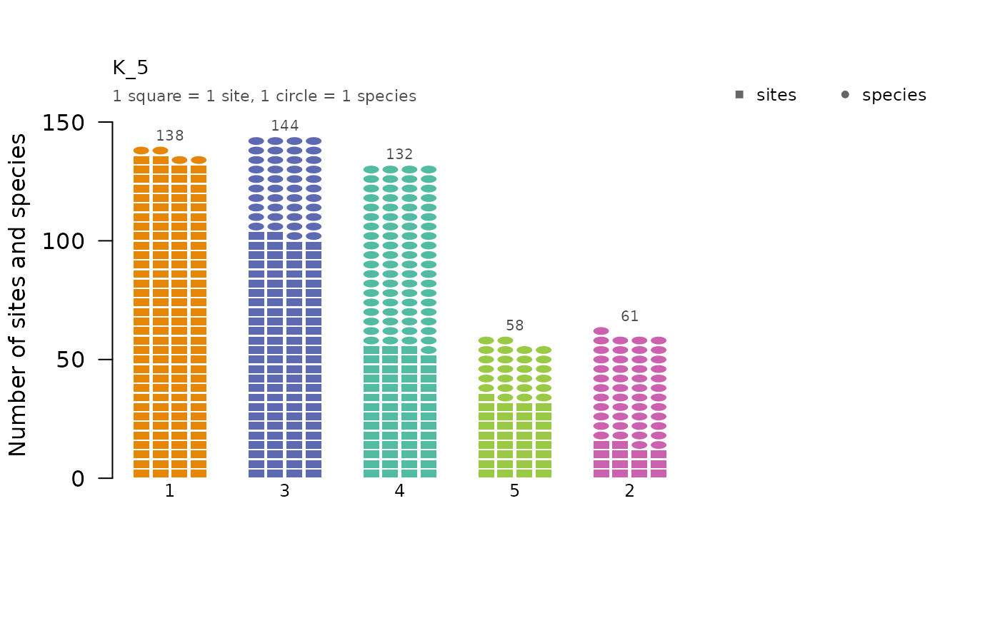
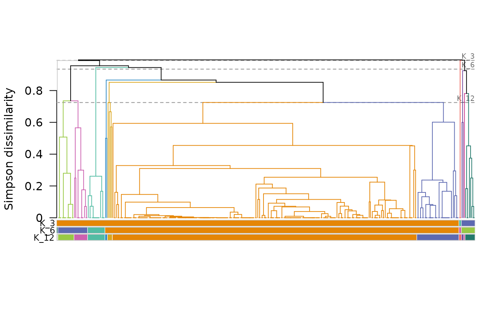
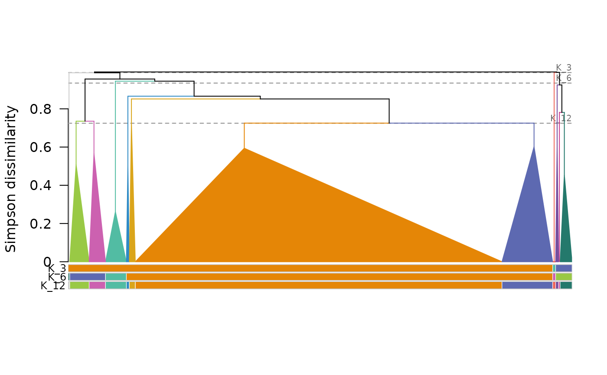
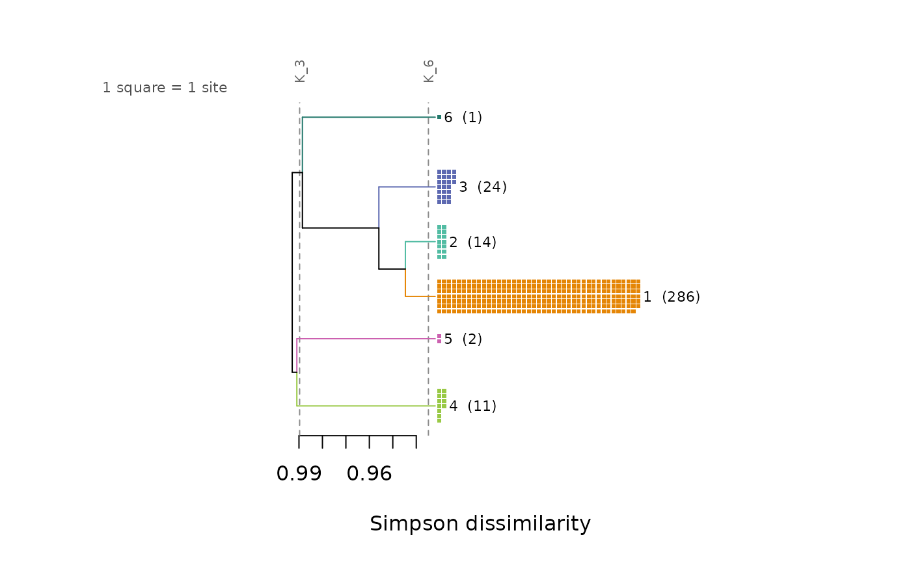
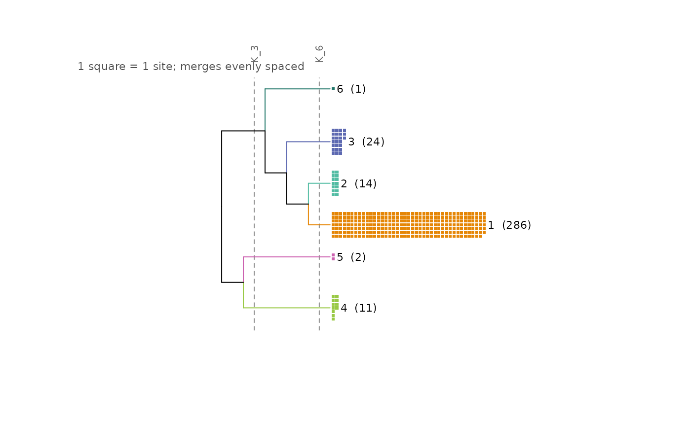
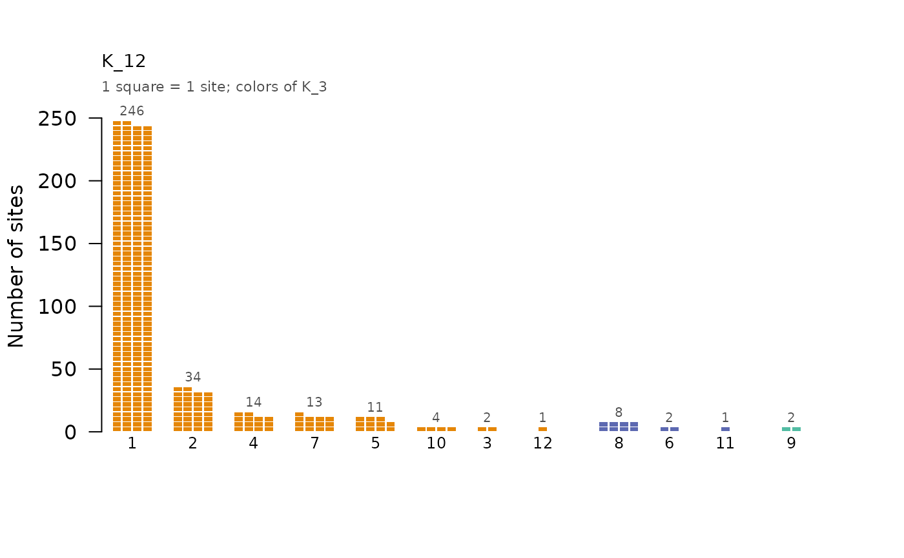

Plot a bioregionalization
Source:R/plot_bioregion_clusters.R
plot.bioregion.clusters.RdPlots the clusters of a bioregionalization, whatever the algorithm used to
obtain them. Three types of plots are available: bars showing the size of
each cluster (all algorithms), trees (hierarchical clustering and nested
partitions, such as the levels of netclu_infomap()), and trees of the
clusters, with the bar of each cluster at the tip of its branch.
Usage
# S3 method for class 'bioregion.clusters'
plot(
x,
plot_type = "auto",
partitions = NULL,
heights = "auto",
collapse = FALSE,
branch_partition = NULL,
color_partition = NULL,
items_per_unit = "auto",
bipartite_layout = "mirror",
max_clusters = 25,
scales = "fixed",
horizontal = FALSE,
flip = FALSE,
labels = TRUE,
axes = TRUE,
main = NULL,
xlab = NULL,
ylab = NULL,
...
)Arguments
- x
A
bioregion.clustersobject.- plot_type
A
characterstring indicating the type of plot:"bars","tree","cluster_tree"or"auto"(default). With"auto", the plot is a tree forhclu_hierarclust()andhclu_diana(), a tree of the clusters for hierarchical results (e.g.,netclu_infomap()with several levels), and bars otherwise. See Details.- partitions
The partitions to plot, given by their number (
1for the first partition, i.e. the first column of clusters inx$clusters,2for the second, etc.) or by their names (e.g.,c("K_3", "K_8")). By default (NULL), all partitions are plotted. For trees, the partition with the most clusters is the one at the tips of the tree.- heights
Trees only. A
characterstring indicating the heights of the branches of trees:"tree"(the heights of the tree ofhclu_hierarclust()orhclu_diana()),"rank"(the merges of that tree in the same order, but evenly spaced; trees of clusters only),"levels"(one step per partition) or"auto"(default:"tree"when the tree is available,"levels"otherwise). See Details.- collapse
A
booleanindicating whether the clusters at the tips of a tree (plot_type = "tree") should be collapsed into triangles (defaultFALSE).- branch_partition
Trees only. The partition whose clusters give their colors to the branches, given by its number or name (see
partitions). By default (NULL), the partition at the tips of the tree.- color_partition
Bars and trees of clusters only. The partition whose clusters give their colors to the squares, given by its number or name (see
partitions). By default (NULL), each partition is colored by its own clusters.- items_per_unit
Bars and trees of clusters only. The number of sites drawn by each square and of species drawn by each circle:
"auto"(default; one, or more for large datasets), one number for both, or two numbers (sites, species).- bipartite_layout
Bars of bipartite clusterings only. A
characterstring indicating how sites and species are shown:"mirror"(default; sites above the baseline, species below),"stack"(species above the sites, in the same bar) or"side"(sites and species in two bars, side by side).- max_clusters
Bars only. The maximum number of bars (default 25). The smallest clusters beyond this number are grouped in a last bar,
"other".- scales
Bars of several partitions only. A
characterstring indicating whether the axis of the numbers of sites is the same in all panels ("fixed", default), so that panels can be compared, or adapted to each panel ("free").- horizontal
A
booleanindicating whether the plot should be drawn horizontally (defaultFALSE): bars from left to right, trees with their root on the left.- flip
A
booleanindicating whether the order of the bars or of the branches of the trees should be reversed (defaultFALSE). A tree remains the same: it is drawn as in a mirror.- labels
A
booleanindicating whether the names of the sites (trees) or of the clusters (bars and trees of clusters) should be written (defaultTRUE).- axes
A
booleanindicating whether the axis of the numbers of sites (bars) or of the heights (trees) should be drawn (defaultTRUE).- main
A
characterstring giving a title. For bars of several partitions, one title per partition can be given. By default (NULL), bars are titled with the name of their partition and trees have no title.- xlab, ylab
characterstrings giving the titles of the horizontal and vertical axes. By default (NULL), the axis of the numbers of sites or of the heights has a title, and the other axis has none. Use""to remove a title.- ...
Further arguments passed to
graphics::text()to customize the names of the sites (trees) or of the clusters (bars and trees of clusters), e.g.,cexto change their size.
Details
Bars (plot_type = "bars")
Each cluster is a bar made of small squares, one per site (or per group of
sites, see items_per_unit), and its number of sites is written at the end
of the bar. For bipartite clusterings, species are drawn as circles.
Clusters are sorted by decreasing number of sites, as in
bioregion_colors(), and clusters of the same size by name (2.1, 2.2,
..., 2.10). The smallest clusters beyond max_clusters are grouped in a
wide bar, "other", as high as the highest bar: they are not one cluster,
so their total size is not compared with the other bars. With several
partitions, each partition is plotted in its own panel, with the same axis
of the numbers of sites in all panels (scales = "fixed") or with an axis
adapted to each panel (scales = "free"). The squares are always square,
so their size can differ between panels. The axis does not apply to the
"other" bar, whose squares are spread over a wider bar.
With color_partition, the squares take the colors of another partition.
With a partition with more clusters, the bars show how each cluster is
split; with a partition with fewer clusters, bars of the same color show
which clusters are grouped together (they are placed side by side).
Trees (plot_type = "tree")
The tree is drawn with one colored bar for each partition, from the fewest
to the most clusters. In each bar, the color next to a site shows the
cluster of that site. Sites that were not assigned to any cluster (NA)
are left blank. The branches that contain sites of a single cluster of
branch_partition are drawn in the color of that cluster, the other
branches are black. When the tree was cut at given heights (or heights
found for given numbers of clusters), dashed lines show these heights.
With collapse = TRUE, each cluster of the partition at the tips is drawn
as a triangle, as wide as its number of sites and as high as the height at
which its sites are joined. Clusters must then be single branches of the
tree: this is not always the case with the dynamic tree cut
(cut_tree(dynamic_tree_cut = TRUE)), whose clusters cannot be collapsed.
Trees of clusters (plot_type = "cluster_tree")
The tree is drawn down to the clusters of the partition at the tips only,
and the bar of each cluster is drawn at the tip of its branch, with its
name and number of sites (and species). The other partitions are shown by
dashed lines (heights = "tree" or "rank") or by the levels of the tree
(heights = "levels").
Heights of the trees
"tree": the heights of the tree ofhclu_hierarclust()orhclu_diana(), i.e. the dissimilarities at which sites and clusters are joined. For trees of clusters, the height axis starts just below the lowest cut, to spread the merges between clusters."rank": the same tree, with its merges in the same order, but evenly spaced. Useful when the merges between clusters are crowded at the top of the tree. Trees of clusters only."levels": a tree rebuilt from the partitions, with one step per partition. A cluster split into more than two clusters at the next level is drawn as a rake, i.e. with all its branches at the same height. This is the only option for algorithms without a tree, such asnetclu_infomap(). The partitions must be nested: each cluster of a partition must be included in a single cluster of the partitions with fewer clusters. Sites without a cluster (NA) in any of the partitions are left out of the tree.
Arguments that do not apply to a plot
Some arguments only apply to some types of plots (e.g., max_clusters to
bars, collapse to trees). When such an argument is changed from its
default value but does not apply to the plot, it is ignored with a
warning.
Colors
The colors are those stored in x by bioregion_colors(), so that plots
and maps made with map_bioregions() share the same colors. If x has no
colors, or if its colors do not match its partitions (e.g., after cutting
the tree again), colors are assigned with bioregion_colors() and its
default parameters.
Names of sites and clusters
Site names are written in the bottom margin of trees, or in their right
margin if horizontal = TRUE. Long names may not fit in it: either reduce
their size (e.g., cex = 0.5), enlarge the margin with graphics::par()
before plotting (e.g., par(mar = c(8, 4, 1, 1))), or remove them with
labels = FALSE.
See also
For more details illustrated with a practical example, see the vignette: https://biorgeo.github.io/bioregion/articles/a5_1_visualization.html.
Associated functions: hclu_hierarclust cut_tree netclu_infomap bioregion_colors map_bioregions
Author
Boris Leroy (leroy.boris@gmail.com)
Maxime Lenormand (maxime.lenormand@inrae.fr)
Pierre Denelle (pierre.denelle@gmail.com)
Examples
data(fishmat)
data(fishdf)
dissim <- dissimilarity(fishmat, metric = "Simpson")
# Bars, for any algorithm
clust <- nhclu_pam(dissim, n_clust = c(4, 8))
plot(clust)

plot(clust, scales = "free")
plot(clust, partitions = 2, horizontal = TRUE, main = "PAM, 8 clusters")

# Bars of a bipartite clustering: sites (squares) and species (circles)
clust_bip <- netclu_greedy(fishdf, bipartite = TRUE)
plot(clust_bip)

plot(clust_bip, bipartite_layout = "stack")

# Tree of a hierarchical clustering, cut into 3, 6 and 12 clusters
tree <- hclu_hierarclust(dissim, n_clust = c(3, 6, 12),
optimal_tree_method = "best", verbose = FALSE)
plot(tree, labels = FALSE)

# Same tree, with the 12 clusters collapsed
plot(tree, collapse = TRUE, labels = FALSE)

# Tree of the 6 clusters of the second partition, with their sizes
plot(tree, plot_type = "cluster_tree", partitions = 1:2,
horizontal = TRUE)

# Same, with the merges evenly spaced
plot(tree, plot_type = "cluster_tree", partitions = 1:2,
heights = "rank", horizontal = TRUE)

# Bars of the 12 clusters, colored by the 3 clusters they belong to
plot(tree, plot_type = "bars", partitions = 3, color_partition = 1)

if (FALSE) { # \dontrun{
# Hierarchy of the levels of Infomap
clust_infomap <- netclu_infomap(fishdf, bipartite_version = TRUE,
show_hierarchy = TRUE)
plot(clust_infomap, horizontal = TRUE)
plot(clust_infomap, plot_type = "tree", collapse = TRUE)
} # }